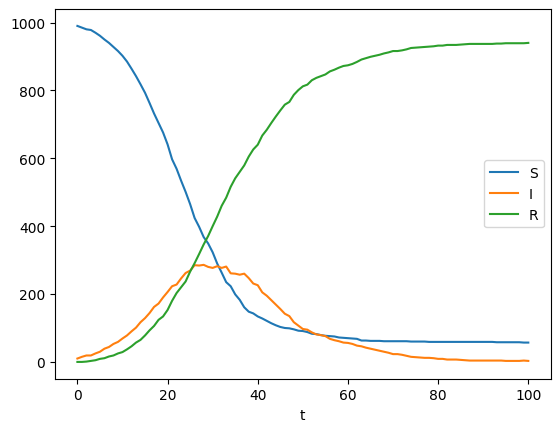

Cloning into 'emidm'...
remote: Enumerating objects: 402, done.
remote: Counting objects: 100% (402/402), done.
remote: Compressing objects: 100% (280/280), done.
remote: Total 402 (delta 122), reused 346 (delta 72), pack-reused 0 (from 0)
Receiving objects: 100% (402/402), 7.93 MiB | 7.08 MiB/s, done.
Resolving deltas: 100% (122/122), done.
/content/emidm
Processing /content/emidm
Installing build dependencies ... done
Getting requirements to build wheel ... done
Preparing metadata (pyproject.toml) ... done
Requirement already satisfied: numpy in /usr/local/lib/python3.11/dist-packages (from emidm==0.1) (2.0.2)
Requirement already satisfied: pandas in /usr/local/lib/python3.11/dist-packages (from emidm==0.1) (2.2.2)
Requirement already satisfied: python-dateutil>=2.8.2 in /usr/local/lib/python3.11/dist-packages (from pandas->emidm==0.1) (2.8.2)
Requirement already satisfied: pytz>=2020.1 in /usr/local/lib/python3.11/dist-packages (from pandas->emidm==0.1) (2025.2)
Requirement already satisfied: tzdata>=2022.7 in /usr/local/lib/python3.11/dist-packages (from pandas->emidm==0.1) (2025.2)
Requirement already satisfied: six>=1.5 in /usr/local/lib/python3.11/dist-packages (from python-dateutil>=2.8.2->pandas->emidm==0.1) (1.17.0)
Building wheels for collected packages: emidm
Building wheel for emidm (pyproject.toml) ... done
Created wheel for emidm: filename=emidm-0.1-py3-none-any.whl size=5483 sha256=378039ec4542021209d6b33267de35724784debf2e5e1949d99501d82f1ee5bc
Stored in directory: /tmp/pip-ephem-wheel-cache-q6201f_n/wheels/00/20/c7/da80873e879ce001145dfae720e01a3365dcfa6526b8b5a366
Successfully built emidm
Installing collected packages: emidm
Successfully installed emidm-0.1
# Imports from our own packagefrom emidm.sir import run_sir, run_model_with_replicates, plot_model_outputsfrom emidm.sampler import generate_lhs_samplesimport pandas as pdfrom plotnine import ggplot, aes, geom_line, facet_wrap
# Demonstrate running one modelsingle = run_sir()# Show the outputsingle
t
N
S
I
R
0
0
1000
990
10
0
1
1
1000
989
8
3
2
2
1000
989
8
3
3
3
1000
986
11
3
4
4
1000
984
13
3
...
...
...
...
...
...
96
96
1000
196
15
789
97
97
1000
195
15
790
98
98
1000
195
14
791
99
99
1000
195
12
793
100
100
1000
193
13
794
101 rows × 5 columns
# Show a single plot linesingle.plot("t", ["S", "I", "R"])
# We can also vary the parametersalt = run_sir(beta =0.3)alt.plot("t", ["S", "I", "R"])

# we can run multiple realisationsreps = run_model_with_replicates(model = run_sir, reps =10)# and plot thesep = plot_model_outputs(reps)
# we can also by args to run_sir through kwargsreps = run_model_with_replicates(model=run_sir, reps=10, beta =0.3)# and plot thesep = plot_model_outputs(reps, columns = ["I", "R"])
# now to generate a lhs sampleparam_ranges = {"beta": [0.1, 0.5], "gamma": [0.05, 0.5]}df_samples = generate_lhs_samples(param_ranges, n_samples=9, seed=42)df_samples
beta
gamma
0
0.376713
0.228056
1
0.150729
0.165132
2
0.229148
0.351219
3
0.421727
0.310697
4
0.272084
0.127481
5
0.350187
0.253662
6
0.471384
0.458862
7
0.302515
0.088638
8
0.119796
0.446809
# Run the model for each row of samples:results = [ run_model_with_replicates(**row.to_dict(), reps=10).assign(**row.to_dict())for _, row in df_samples.iterrows()]# Combine results into one DataFrame:df_all_results = pd.concat(results, axis=0)
# Reshape dataframe into tidy long-formatdf_long = df_all_results.melt( id_vars=["t", "replicate", "gamma", "beta"], value_vars=["S", "I", "R"], var_name="Compartment", value_name="Value",)# Add unique identifier for group plottingdf_long = df_long.assign( uid=df_long["Compartment"]+ df_long["replicate"].astype(str))# Add facet identifier for group plottingdf_long = df_long.assign( facet="beta = "+ df_long["beta"].round(3).astype(str)+",\n"+"gamma = "+ df_long["gamma"].round(3).astype(str))# Plot: color by compartment, lines grouped by replicatep = ( ggplot( df_long, aes(x="t", y="Value", group="uid", color="Compartment"), )+ geom_line(alpha=0.7)+ facet_wrap("facet"))# Explicitly plotggplot.show(p)
# Import necessary libraries for neural networksimport numpy as npimport torchimport torch.nn as nnfrom torch.utils.data import Dataset, DataLoaderfrom torch.optim.lr_scheduler import ReduceLROnPlateaufrom sklearn.preprocessing import StandardScalerimport matplotlib.pyplot as pltfrom tqdm.notebook import tqdmimport osimport json# Set random seed for reproducibilitytorch.manual_seed(42)np.random.seed(42)# Create output directory for saving models and plotsoutput_dir ="emulator_results"os.makedirs(output_dir, exist_ok=True)# Generate LHS samples ensuring beta > gamma (R0 > 1)# Instead of independent ranges, we'll sample R0 and recovery raten_samples =10000r0_range = [1.1, 4.0] # Ensuring R0 > 1 for epidemicsgamma_range = [0.05, 0.25] # Recovery rate# Custom sampling to ensure beta > gammar0_samples = np.linspace(r0_range[0], r0_range[1], n_samples)gamma_samples = np.linspace(gamma_range[0], gamma_range[1], n_samples)np.random.shuffle(r0_samples)np.random.shuffle(gamma_samples)# Calculate beta = R0 * gammabeta_samples = r0_samples * gamma_samplesparam_df = pd.DataFrame({'beta': beta_samples,'gamma': gamma_samples,'R0': r0_samples})print(f"Generated {len(param_df)} parameter sets with R0 ranging from {param_df['R0'].min():.2f} to {param_df['R0'].max():.2f}")# Run the SIR model for each parameter setprint("Generating training data...")results = []for _, row in tqdm(param_df.iterrows(), total=len(param_df)):# Use only beta and gamma for model running model_params = {'beta': row['beta'], 'gamma': row['gamma']} sim_result = run_sir(**model_params)# Add the parameters to the result dataframe sim_result = sim_result.assign(**model_params) results.append(sim_result)# Combine results into one DataFramedf_all_results = pd.concat(results, axis=0)
Generated 10000 parameter sets with R0 ranging from 1.10 to 4.00
Generating training data...
class SIRTimeSeriesDataset(Dataset):def__init__(self, dataframe, lookback=10, features=['beta', 'gamma'], targets=['S', 'I']):self.lookback = lookbackself.features = featuresself.targets = targets# Group by parameter setsself.grouped = dataframe.groupby(['beta', 'gamma'])self.param_sets =list(self.grouped.groups.keys())# Extract timepoints (assuming they're the same for all parameter sets)self.timepoints = dataframe['t'].unique()self.time_length =len(self.timepoints)# Create samplesself.samples = []for param_set inself.param_sets: df_group =self.grouped.get_group(param_set).sort_values('t')# Extract feature and target time series feature_values = np.array([param_set[features.index('beta')], param_set[features.index('gamma')]])# Extract full target time series target_series = np.column_stack([df_group[target].values for target in targets])# Store full time series with parameter infoself.samples.append({'features': feature_values,'targets': target_series,'param_values': param_set })# Normalize input features feature_array = np.array([s['features'] for s inself.samples])self.feature_scaler = StandardScaler()self.feature_scaler.fit(feature_array)# No need to normalize S and I as they're already in [0,1] rangedef__len__(self):returnlen(self.samples)def__getitem__(self, idx): sample =self.samples[idx]# Normalize features features_normalized =self.feature_scaler.transform(sample['features'].reshape(1, -1)).flatten()return torch.tensor(features_normalized, dtype=torch.float32), \ torch.tensor(sample['targets'], dtype=torch.float32)
# Create datasetsir_dataset = SIRTimeSeriesDataset(df_all_results, lookback=10)# Split into train, validation, and test sets (70%, 15%, 15%)total_size =len(sir_dataset)train_size =int(0.7* total_size)val_size =int(0.15* total_size)test_size = total_size - train_size - val_size# Create indices for the splitindices =list(range(total_size))np.random.shuffle(indices)train_indices = indices[:train_size]val_indices = indices[train_size:train_size+val_size]test_indices = indices[train_size+val_size:]# Create subset datasetsfrom torch.utils.data import Subsettrain_dataset = Subset(sir_dataset, train_indices)val_dataset = Subset(sir_dataset, val_indices)test_dataset = Subset(sir_dataset, test_indices)# Create data loadersbatch_size =16train_loader = DataLoader(train_dataset, batch_size=batch_size, shuffle=True)val_loader = DataLoader(val_dataset, batch_size=batch_size)test_loader = DataLoader(test_dataset, batch_size=batch_size)print(f"Dataset created with {total_size} parameter sets")print(f"Train: {train_size}, Validation: {val_size}, Test: {test_size}")
Dataset created with 10000 parameter sets
Train: 7000, Validation: 1500, Test: 1500
# Define constantsinput_size =2# beta and gammahidden_size =64output_size =2# S and Inum_layers =2dropout_prob =0.1# Feedforward Neural Networkclass FFNN(nn.Module):def__init__(self, input_size, hidden_size, time_steps, output_channels):super(FFNN, self).__init__()self.time_steps = time_stepsself.output_channels = output_channels# Deeper network with dropout and batch normalizationself.network = nn.Sequential( nn.Linear(input_size, hidden_size), nn.BatchNorm1d(hidden_size), nn.ReLU(), nn.Dropout(dropout_prob), nn.Linear(hidden_size, hidden_size*2), nn.BatchNorm1d(hidden_size*2), nn.ReLU(), nn.Dropout(dropout_prob), nn.Linear(hidden_size*2, hidden_size*2), nn.BatchNorm1d(hidden_size*2), nn.ReLU(), nn.Dropout(dropout_prob), nn.Linear(hidden_size*2, time_steps * output_channels) )def forward(self, x):# Output shape: [batch_size, time_steps, output_channels] output =self.network(x)return output.view(-1, self.time_steps, self.output_channels)# GRU Model (similar to the reference script)class GRUModel(nn.Module):def__init__(self, input_size, hidden_size, output_size, dropout_prob, num_layers=2):super(GRUModel, self).__init__()self.hidden_size = hidden_sizeself.num_layers = num_layers# Project parameters to a sequenceself.input_projection = nn.Sequential( nn.Linear(input_size, hidden_size), nn.ReLU() )# GRU layerself.gru = nn.GRU( hidden_size, hidden_size, num_layers=num_layers, dropout=dropout_prob if num_layers >1else0.0, batch_first=True )# Output layersself.fc = nn.Linear(hidden_size, output_size)self.ln = nn.LayerNorm(hidden_size)self.dropout = nn.Dropout(dropout_prob)def forward(self, x): batch_size = x.size(0) time_steps = sir_dataset.time_length# Create a sequence from the parameter input x_seq =self.input_projection(x).unsqueeze(1).repeat(1, time_steps, 1)# Process with GRU out, _ =self.gru(x_seq) out =self.ln(out) out =self.dropout(out) out =self.fc(out)return out# LSTM Model (similar to the reference script)class LSTMModel(nn.Module):def__init__(self, input_size, hidden_size, output_size, dropout_prob, num_layers=2):super(LSTMModel, self).__init__()self.hidden_size = hidden_sizeself.num_layers = num_layers# Project parameters to a sequenceself.input_projection = nn.Sequential( nn.Linear(input_size, hidden_size), nn.ReLU() )# LSTM layerself.lstm = nn.LSTM( hidden_size, hidden_size, num_layers=num_layers, dropout=dropout_prob if num_layers >1else0.0, batch_first=True )# Output layersself.fc = nn.Linear(hidden_size, output_size)self.ln = nn.LayerNorm(hidden_size)self.dropout = nn.Dropout(dropout_prob)def forward(self, x): batch_size = x.size(0) time_steps = sir_dataset.time_length# Create a sequence from the parameter input x_seq =self.input_projection(x).unsqueeze(1).repeat(1, time_steps, 1)# Process with LSTM out, _ =self.lstm(x_seq) out =self.ln(out) out =self.dropout(out) out =self.fc(out)return out# Initialize modelsffnn_model = FFNN(input_size, hidden_size, sir_dataset.time_length, output_size)gru_model = GRUModel(input_size, hidden_size, output_size, dropout_prob, num_layers)lstm_model = LSTMModel(input_size, hidden_size, output_size, dropout_prob, num_layers)# Move models to GPU if availabledevice = torch.device("cuda"if torch.cuda.is_available() else"cpu")ffnn_model = ffnn_model.to(device)gru_model = gru_model.to(device)lstm_model = lstm_model.to(device)print(f"Models initialized and moved to {device}")
Models initialized and moved to cuda
def train_model(model, train_loader, val_loader, epochs, lr, model_name, device, patience=10):# Initialize criterion, optimizer and scheduler criterion = nn.MSELoss() optimizer = torch.optim.Adam(model.parameters(), lr=lr) scheduler = ReduceLROnPlateau(optimizer, mode='min', factor=0.5, patience=5, verbose=True)# For tracking loss and best model train_losses = [] val_losses = [] best_val_loss =float('inf') patience_counter =0 best_epoch =0# Path to save best model best_model_path = os.path.join(output_dir, f"{model_name}_best.pt")for epoch inrange(1, epochs +1):# Training phase model.train() total_train_loss =0.0for inputs, targets in train_loader: inputs = inputs.to(device) targets = targets.to(device)# Forward pass outputs = model(inputs)# Calculate loss loss = criterion(outputs, targets)# Backward pass and optimize optimizer.zero_grad() loss.backward() optimizer.step() total_train_loss += loss.item() * inputs.size(0)# Calculate average training loss avg_train_loss = total_train_loss /len(train_loader.dataset) train_losses.append(avg_train_loss)# Validation phase model.eval() total_val_loss =0.0with torch.no_grad():for inputs, targets in val_loader: inputs = inputs.to(device) targets = targets.to(device)# Forward pass outputs = model(inputs)# Calculate loss loss = criterion(outputs, targets) total_val_loss += loss.item() * inputs.size(0)# Calculate average validation loss avg_val_loss = total_val_loss /len(val_loader.dataset) val_losses.append(avg_val_loss)# Update scheduler scheduler.step(avg_val_loss)# Print progress every 10 epochsif epoch %10==0:print(f'Epoch {epoch}/{epochs}, {model_name} - 'f'Train Loss: {avg_train_loss:.4f}, Val Loss: {avg_val_loss:.4f}')# Check if this is the best model so farif avg_val_loss < best_val_loss: best_val_loss = avg_val_loss best_epoch = epoch patience_counter =0# Save the best model torch.save({'epoch': epoch,'model_state_dict': model.state_dict(),'optimizer_state_dict': optimizer.state_dict(),'val_loss': avg_val_loss,'train_loss': avg_train_loss }, best_model_path)print(f"New best model saved at epoch {epoch} with validation loss: {avg_val_loss:.6f}")else: patience_counter +=1if epoch %10==0:print(f"Validation loss did not improve. Patience: {patience_counter}/{patience}")# Early stopping checkif patience_counter >= patience:print(f"Early stopping triggered after {epoch} epochs. Best was epoch {best_epoch}.")break# Save training history history = {'train_loss': train_losses,'val_loss': val_losses,'epochs': list(range(1, len(train_losses) +1)),'best_epoch': best_epoch,'best_val_loss': best_val_loss }withopen(os.path.join(output_dir, f"{model_name}_history.json"), 'w') as f: json.dump(history, f)# Load the best model checkpoint = torch.load(best_model_path) model.load_state_dict(checkpoint['model_state_dict'])return model, history# Set training parameterslearning_rate =1e-3num_epochs =100patience =10print("Training FFNN model...")ffnn_model, ffnn_history = train_model( ffnn_model, train_loader, val_loader, num_epochs, learning_rate, "ffnn", device, patience)print("Training GRU model...")gru_model, gru_history = train_model( gru_model, train_loader, val_loader, num_epochs, learning_rate, "gru", device, patience)print("Training LSTM model...")lstm_model, lstm_history = train_model( lstm_model, train_loader, val_loader, num_epochs, learning_rate, "lstm", device, patience)
Training FFNN model...
/usr/local/lib/python3.11/dist-packages/torch/optim/lr_scheduler.py:62: UserWarning: The verbose parameter is deprecated. Please use get_last_lr() to access the learning rate.
New best model saved at epoch 1 with validation loss: 104436.124500
New best model saved at epoch 2 with validation loss: 63459.911510
New best model saved at epoch 3 with validation loss: 41432.730646
New best model saved at epoch 4 with validation loss: 25967.092187
New best model saved at epoch 5 with validation loss: 16857.213023
New best model saved at epoch 6 with validation loss: 9870.962557
New best model saved at epoch 7 with validation loss: 7327.849095
New best model saved at epoch 8 with validation loss: 5636.023039
New best model saved at epoch 9 with validation loss: 5410.085361
Epoch 10/100, ffnn - Train Loss: 6868.9444, Val Loss: 3887.4719
New best model saved at epoch 10 with validation loss: 3887.471922
New best model saved at epoch 11 with validation loss: 3554.377452
New best model saved at epoch 14 with validation loss: 3372.922528
New best model saved at epoch 16 with validation loss: 3143.850318
Epoch 20/100, ffnn - Train Loss: 6184.6946, Val Loss: 3802.9535
Validation loss did not improve. Patience: 4/10
New best model saved at epoch 25 with validation loss: 3087.635581
New best model saved at epoch 29 with validation loss: 2726.287652
Epoch 30/100, ffnn - Train Loss: 5706.8670, Val Loss: 4084.1311
Validation loss did not improve. Patience: 1/10
Early stopping triggered after 39 epochs. Best was epoch 29.
Training GRU model...
/usr/local/lib/python3.11/dist-packages/torch/optim/lr_scheduler.py:62: UserWarning: The verbose parameter is deprecated. Please use get_last_lr() to access the learning rate.
New best model saved at epoch 1 with validation loss: 111350.236104
New best model saved at epoch 2 with validation loss: 70772.084188
New best model saved at epoch 3 with validation loss: 35857.628099
New best model saved at epoch 4 with validation loss: 14864.736435
New best model saved at epoch 5 with validation loss: 5942.902559
New best model saved at epoch 6 with validation loss: 3473.368871
New best model saved at epoch 7 with validation loss: 2320.014732
New best model saved at epoch 8 with validation loss: 2081.881875
New best model saved at epoch 9 with validation loss: 2071.360914
Epoch 10/100, gru - Train Loss: 2235.9091, Val Loss: 1888.1403
New best model saved at epoch 10 with validation loss: 1888.140310
New best model saved at epoch 13 with validation loss: 1845.682044
New best model saved at epoch 17 with validation loss: 1819.563156
Epoch 20/100, gru - Train Loss: 2126.5699, Val Loss: 1857.9604
Validation loss did not improve. Patience: 3/10
New best model saved at epoch 26 with validation loss: 1818.017279
New best model saved at epoch 27 with validation loss: 1805.713877
Epoch 30/100, gru - Train Loss: 2022.8890, Val Loss: 1839.3206
Validation loss did not improve. Patience: 3/10
New best model saved at epoch 33 with validation loss: 1805.178362
Epoch 40/100, gru - Train Loss: 1966.1522, Val Loss: 1809.6070
Validation loss did not improve. Patience: 7/10
New best model saved at epoch 42 with validation loss: 1795.723815
New best model saved at epoch 43 with validation loss: 1781.053090
Epoch 50/100, gru - Train Loss: 1945.6929, Val Loss: 1801.7720
Validation loss did not improve. Patience: 7/10
Early stopping triggered after 53 epochs. Best was epoch 43.
Training LSTM model...
/usr/local/lib/python3.11/dist-packages/torch/optim/lr_scheduler.py:62: UserWarning: The verbose parameter is deprecated. Please use get_last_lr() to access the learning rate.
New best model saved at epoch 1 with validation loss: 111578.491063
New best model saved at epoch 2 with validation loss: 70829.550708
New best model saved at epoch 3 with validation loss: 35713.970964
New best model saved at epoch 4 with validation loss: 14948.452602
New best model saved at epoch 5 with validation loss: 5996.943010
New best model saved at epoch 6 with validation loss: 3388.910350
New best model saved at epoch 7 with validation loss: 2425.883303
New best model saved at epoch 8 with validation loss: 2033.618235
New best model saved at epoch 9 with validation loss: 1913.241896
Epoch 10/100, lstm - Train Loss: 2227.6538, Val Loss: 2169.9325
Validation loss did not improve. Patience: 1/10
New best model saved at epoch 14 with validation loss: 1906.277953
New best model saved at epoch 15 with validation loss: 1843.907508
Epoch 20/100, lstm - Train Loss: 2042.4460, Val Loss: 1905.7540
Validation loss did not improve. Patience: 5/10
New best model saved at epoch 24 with validation loss: 1826.527445
New best model saved at epoch 27 with validation loss: 1818.424560
Epoch 30/100, lstm - Train Loss: 1961.7409, Val Loss: 1844.0602
Validation loss did not improve. Patience: 3/10
New best model saved at epoch 33 with validation loss: 1818.323568
New best model saved at epoch 34 with validation loss: 1804.594625
Epoch 40/100, lstm - Train Loss: 1931.3866, Val Loss: 1818.5323
Validation loss did not improve. Patience: 6/10
New best model saved at epoch 41 with validation loss: 1800.579285
New best model saved at epoch 47 with validation loss: 1798.995255
Epoch 50/100, lstm - Train Loss: 1913.1617, Val Loss: 1823.8187
Validation loss did not improve. Patience: 3/10
New best model saved at epoch 57 with validation loss: 1797.127970
Epoch 60/100, lstm - Train Loss: 1895.3536, Val Loss: 1796.3658
New best model saved at epoch 60 with validation loss: 1796.365826
Epoch 70/100, lstm - Train Loss: 1895.9019, Val Loss: 1804.6381
Validation loss did not improve. Patience: 10/10
Early stopping triggered after 70 epochs. Best was epoch 60.